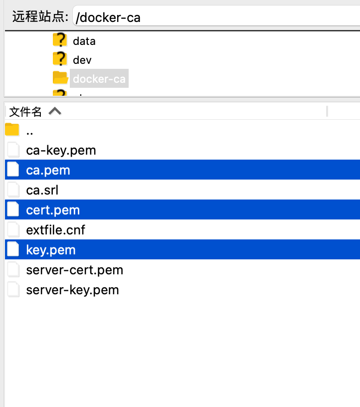
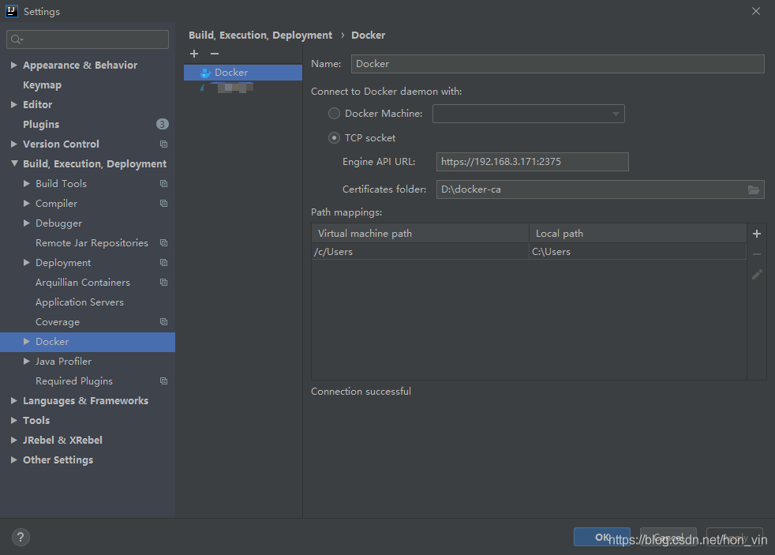
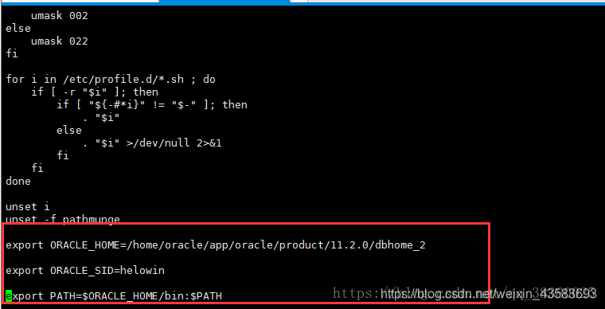
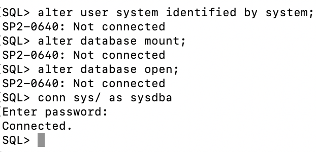
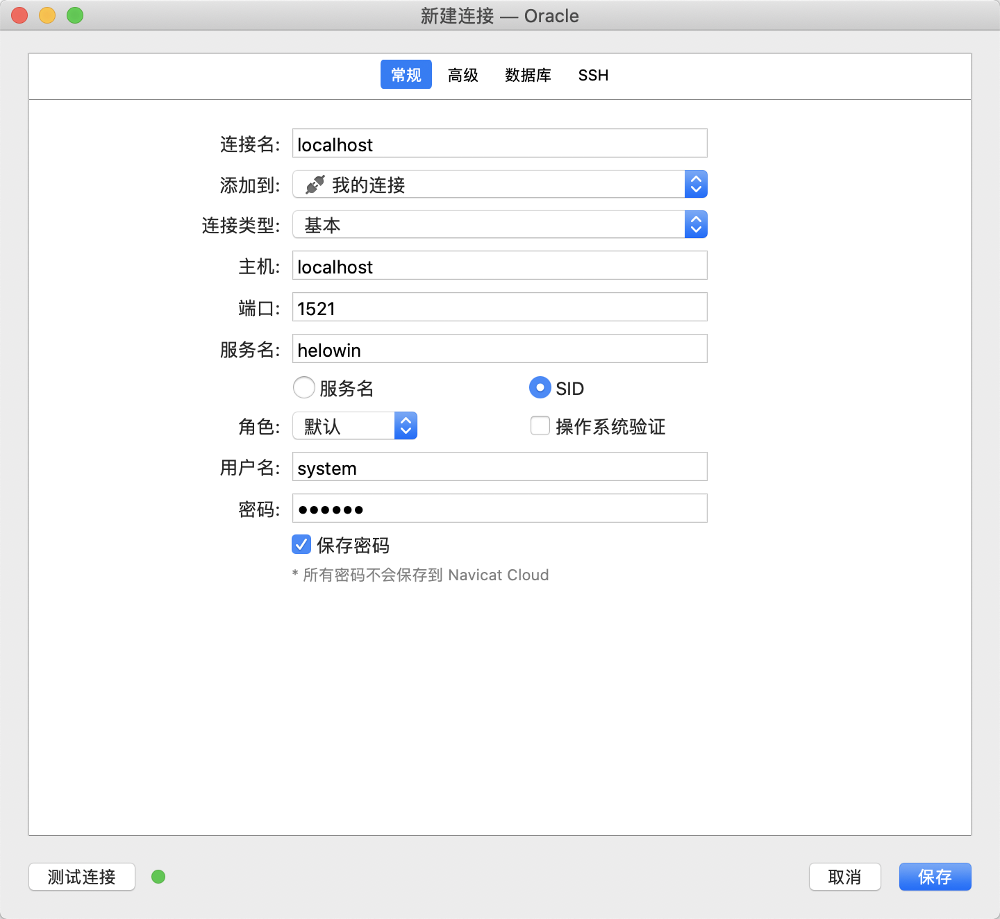
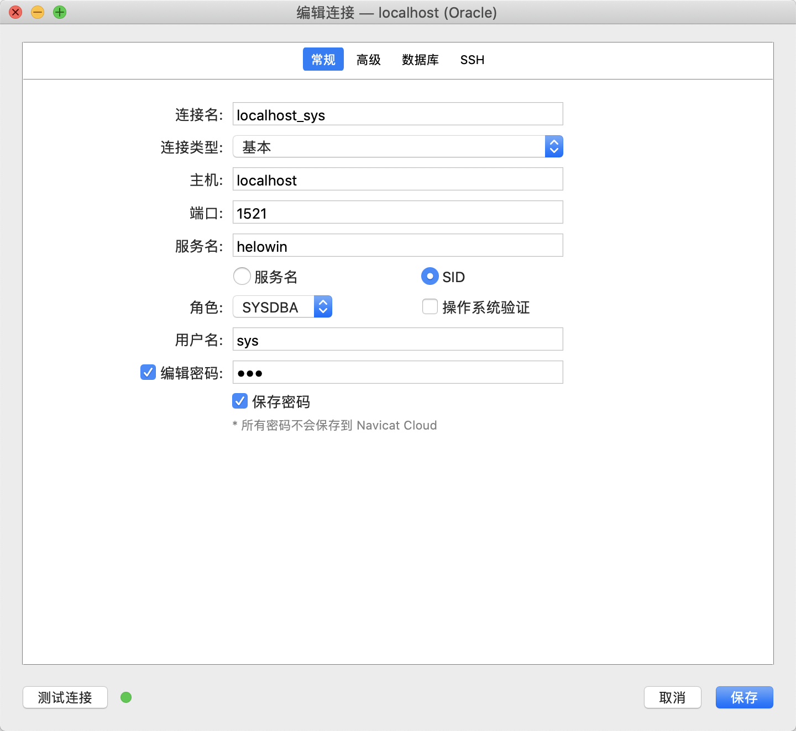

清理docker日志
https://blog.csdn.net/yjk13703623757/article/details/80283729
cat /dev/null > *-json.log
docker开放2375端口，并添加安全传输层协议（TLS）和CA认证制作证书及秘钥
我们需要使用OpenSSL制作CA机构证书、服务端证书和客户端证书，以下操作均在安装Docker的Linux服务器上进行。
1、创建一个目录用于存储生成的证书和秘钥
mkdir /docker-ca && cd /docker-ca
2、创建CA证书私钥，期间需要输入两次密码，生成文件为ca-key.pem
openssl genrsa -aes256 -out ca-key.pem 4096
3、根据私钥创建CA证书，期间需要输入上一步设置的私钥密码，然后依次输入国家是 CN，省例如是Guangdong、市Shenzhen、组织名称、组织单位、姓名或服务器名、邮件地址，都可以随意填写，生成文件为ca.pem
openssl req -new -x509 -days 365 -key ca-key.pem -sha256 -out ca.pem
4、创建服务端私钥，生成文件为server-key.pem
openssl genrsa -out server-key.pem 4096
5、创建服务端证书签名请求文件，用于CA证书给服务端证书签名。IP需要换成自己服务器的IP地址，或者域名都可以。生成文件server.csr
openssl req -subj "/CN=82.157.162.43" -sha256 -new -key server-key.pem -out server.csr
6、配置白名单，用多个用逗号隔开，例如： IP:192.168.3.171,IP:0.0.0.0，这里需要注意，虽然0.0.0.0可以匹配任意，但是仍然需要配置你的服务器IP，如果省略会造成错误
echo subjectAltName = IP:82.157.162.43,IP:0.0.0.0 >> extfile.cnf
7、将Docker守护程序密钥的扩展使用属性设置为仅用于服务器身份验证
echo extendedKeyUsage = serverAuth >> extfile.cnf
8、创建CA证书签名好的服务端证书，期间需要输入CA证书私钥密码，生成文件为server-cert.pem
openssl x509 -req -days 365 -sha256 -in server.csr -CA ca.pem -CAkey ca-key.pem \-CAcreateserial -out server-cert.pem -extfile extfile.cnf
9、创建客户端私钥，生成文件为key.pem
openssl genrsa -out key.pem 4096
10、创建客户端证书签名请求文件，用于CA证书给客户证书签名，生成文件client.csr
openssl req -subj '/CN=client' -new -key key.pem -out client.csr
11、要使密钥适合客户端身份验证，请创建扩展配置文件
echo extendedKeyUsage = clientAuth >> extfile.cnf
12、创建CA证书签名好的客户端证书，期间需要输入CA证书私钥密码，生成文件为cert.pem
openssl x509 -req -days 365 -sha256 -in client.csr -CA ca.pem -CAkey ca-key.pem \-CAcreateserial -out cert.pem -extfile extfile.cnf
13、删除不需要的文件，两个证书签名请求
rm -v client.csr server.csr
14、修改证书为只读权限保证证书安全
chmod -v 0400 ca-key.pem key.pem server-key.pem
chmod -v 0444 ca.pem server-cert.pem cert.pem
15、归集服务器证书
cp server-*.pem /etc/docker/ && cp ca.pem /etc/docker/
最终生成文件如下，有了它们我们就可以进行基于TLS的安全访问了
- ca.pem CA证书
- ca-key.pem CA证书私钥
- server-cert.pem 服务端证书
- server-key.pem 服务端证书私钥
- cert.pem 客户端证书
- key.pem 客户端证书私钥
配置Docker支持TLS
修改docker.service文件
vi /usr/lib/systemd/system/docker.service
修改以ExecStart开头的配置，开启TLS认证，并配置好CA证书、服务端证书和服务端私钥
ExecStart=/usr/bin/dockerd --tlsverify --tlscacert=/etc/docker/ca.pem --tlscert=/etc/docker/server-cert.pem --tlskey=/etc/docker/server-key.pem -H tcp://0.0.0.0:2375 -H unix:///var/run/docker.sock
重新加载daemon
systemctl daemon-reload && systemctl restart docker
重启docker
service docker restart
配置idea
保存相关客户端的pem文件到本地


查看详情
docker inspect
查看存储
docker system df
docker system df -v
安装
tar zxvf docker-19.03.9.tgz
用yum源安装 docker
yum -y install docker
-y表示不询问安装，直到安装成功，安装完后再次查看安装列表
yum list installed | grep docker
启动docker
systemctl start docker
查看docker服务状态 systemctl status docker
以上说明docker安装成功
卸载
yum remove docker -y
yum remove docker-client -y
yum remove docker-client-latest -y
yum remove docker-common -y
yum remove docker-latest -y
yum remove docker-latest-logrotate -y
yum remove docker-logrotate -y
yum remove docker-engine -y
systemctl stop docker
rpm -qa | grep docker
yum -y remove
rm -rf /var/lib/docker
设置docker目录-新版本（1.13以上）
1.查看默认目录
sudo docker info | grep "Docker Root Dir"
2.停止docker服务
systemctl stop docker
3.docker的配置文件路径在/etc/docker/daemon.json，增加一个key和value，
指定docker的路径："data-root": "/new-path/docker"
vim /etc/docker/daemon.json
{
"data-root": "/home/project/docker"
}
4.启动docker服务
systemctl start docker
执行docker info，查看docker信息如下：
[root@localhost ~]# docker info
设置docker目录-老版本（1.13以下（含））
1.查看默认目录
sudo docker info | grep "Docker Root Dir"
2.停止docker服务
systemctl stop docker
3.docker的配置文件路径在/etc/docker/daemon.json，增加一个key和value，
指定docker的路径："graph": "/new-path/docker"
vim /etc/docker/daemon.json
{
"graph": "/mnt/docker"
}
4.启动docker服务
systemctl start docker
执行docker info，查看docker信息如下：
[root@localhost ~]# docker info
如果是已有运行的需要更改
配置 /etc/systemd/system/docker.service.d/devicemapper.conf
查看/etc/systemd/system/docker.service.d目录及devicemapper.conf是否存在。如果不存在，就新建。
** ** [Service]
ExecStart=/var/lib/docker --graph=/home/docker/lib/docker
systemctl disable docker
systemctl enable docker
systemctl daemon-reload
systemctl start docker
Docker容器启动时报错：container init caused “write /proc/self/attr/keycreate: permission denied““: unknown
2.1 永久更改
需要重启服务器，慎重选用：
编辑config文件：vi /etc/selinux/config
将SELINUX=enforcing改为SELINUX=disabled
重启服务器
启动docker容器docker start container-id
2.2 临时更改
输入setenforce 0
启动docker容器docker start container-id
Docker容器中运行ls，出现ls: can't open '.': Permission denied错误
在docker主机关闭selinux功能:
形成原因：
centos7.x及以上系统默认的selinux进程会iu禁用部分权限，可使用以下方式解决：
（selinux相关内容可参考：https://blog.csdn.net/mjlfto/article/details/80547974）
1. 在docker主机关闭selinux功能:
setenforce 0 //setenforce [0|1]
//0宽容模式 1强制模式 默认强制模式（Enforcing）
2. 在docker run 运行容器时添加特权参数： --privileged=true
3. 更改挂载目录的selinux安全规则文本：
chcon -Rt svirt_sandbox_file_t /home/mount
容器内安装
apt-get install vim
apt-get update
apt-get install vim
docker pull 镜像:tag ##拉去默认仓库tag版本号的镜像
docker images ##查询本地仓库的所有镜像
docker rmi 镜像id ##删除镜像
docker tag 镜像id 镜像:TAG ##重命名镜像
docker ps ##查询本地容器
docker ps -a ##查询本地所有运行的容器
docker export 容器id > x:/xx/xx.tar ##导出容器快照
docker import < x:/xx/xx.tar 镜像名称:tag ##导入容器快照
docker save 镜像id > x:/xx/xx.tar 镜像名称:tag ##导出镜像
docker load < x:/xx/xx.tar ##导入镜像
docker cp 拷贝文件路径 容器id：拷贝到容器里面对应的路径 ##宿主机拷贝文件到容器
docker cp 容器id：要拷贝的文件在容器里面的路径 要拷贝到宿主机的相应路径 ##容器拷贝文件到宿主机
docker commit -m='注释' -a='作者' 容器ID 镜像名称:tag
docker save 镜像id -o x:/xx/xx.tar
docker load -i x:/xx/xx.tar
docker commit -m='注释' -a='作者' 容器ID 镜像名称:tag
docker save 镜像id > x:/xx/xx.tar 镜像名称:tag ##导出镜像
docker load < x:/xx/xx.tar ##导入镜像
docker run -p 5000:8080 --name 容器名称 -d -t 镜像名称
docker save postgis:9.6-2.5 > postgis.tar postgis:9.6-2.5 ##导出镜像
docker save nginx:1.23.1 > nginx.tar nginx:1.23.1
docker save docker.io/tomcat:8-jdk8-corretto > tomcat.tar tomcat:8-jdk8-corretto
docker commit geoserver_gis_hq_server geoserver_gis_hq:1.1
docker save geoserver_gis_hq:1.1 > geoserver_gis_hq.tar
docker save nginx:1.23.1 > nginx.tar
docker commit -m='centos7 python3.7.3' -a='yss' 860b91886ce4 yssenn/centos7_python:3.7.3
docker import < tgc.tar tgc:1.0
docker build -t book-server:1.0 .
docker build -t postgis:9.6-2.5 .
docker容器无法访问宿主机-No route to host
方法一：关闭防火墙
centos关闭防火墙的操作为
systemctl stop firewalld
方法二： 在防火墙上开发指定端口
firewall-cmd --zone=public --add-port=2181/tcp --permanent
firewall-cmd --reload
#如果vim提示找不到，则执行上安装vim
vim /etc/sysctl.conf
#配置转发 net.ipv4.ip_forward=1
#重启服务，让配置生效 systemctl restart network
#查看是否成功,如果返回为“net.ipv4.ip_forward = 1”则表示成功
sysctl net.ipv4.ip_forward
#重启docker服务 service docker restart
java JDK
docker pull openjdk:8
docker run -d -t -p 8001:8001 -v /mnt/poct/java8:/mnt --name java8 openjdk:8
oracle
https://blog.csdn.net/weixin_43583693/article/details/90243856
docker pull registry.cn-hangzhou.aliyuncs.com/helowin/oracle_11g
docker run -d -p 1521:1521 --name yss_oracle11 registry.cn-hangzhou.aliyuncs.com/helowin/oracle_11g
docker run -d -p 1521:1521 --name oracle11 registry.cn-hangzhou.aliyuncs.com/helowin/oracle_11g
1、进入oracle的命令环境中。
docker exec -it yss_oracle11 bash
2、切换到oracle数据库的root 用户下
su root
密码：helowin
3、编辑profile文件配置ORACLE环境变量（vi /etc/profile）
export ORACLE_HOME=/home/oracle/app/oracle/product/11.2.0/dbhome_2
export ORACLE_SID=helowin
export PATH=$ORACLE_HOME/bin:PATH
在最后加上

export ORACLE_HOME=/home/oracle/app/oracle/product/11/dbhome
export ORACLE_SID=helowin
export PATH=$ORACLE_HOME/bin:PATH
4、创建软连接
ln -s $ORACLE_HOME/bin/sqlplus /usr/bin
5、切换到oracle 用户
su - oracle
6、登录sqlplus–修改sys、system用户密码–创建用户
sqlplus /nolog
conn sys/ as sysdba;
密码：helowin
修改密码：
alter user system identified by system;
alter user sys identified by sys;
ALTER PROFILE DEFAULT LIMIT PASSWORD_LIFE_TIME UNLIMITED;
创建用户
create user test identified by test;
并给用户赋予权限
grant connect,resource,dba to test;

过程中出现的报错需要输入以下内容：
输入：alter database mount;
输入 ：alter database open;
输入sql语句出现SP2-0640: Not connected
conn sys/ as sysdba;



create user test identified by test;
并给用户赋予权限
grant connect,resource,dba to test;
grant create session to
问题：[99999][29516] ORA-29516: Aurora 断言失败: Assertion failure at joez.c:3311
Bulk load of method java/lang/Object.<init> failed; insufficient shm-object space
https://www.freesion.com/article/6651164397/
执行sql
alter system set JAVA_JIT_ENABLED= FALSE scope = both;
postgresql
docker pull postgis/postgis:9.6-2.5
docker run -p 5432:5432 --name yss_postgres -e POSTGRES_PASSWORD=123.com -d -t postgis/postgis:9.6-2.5 /bin/bash
docker run -p 54321:5432 --name yss_postgres2 -e POSTGRES_PASSWORD=123.com -d -t postgis/postgis:9.6-2.5
docker run -p 54322:5432 --name yss_postgres3 -e POSTGRES_PASSWORD=123.com -d -t postgis/postgis:13-master
docker run -p 54323:5432 --name yss_postgres4 -e POSTGRES_PASSWORD=123.com -d -t postgis/postgis:9.6-3.1 /bin/bash
docker run -p 54321:5432 --name postgres2 -e POSTGRES_PASSWORD=pg#cs@db.com -d -t postgis/postgis:9.6-2.5
docker run -p 5432:5432 --name postgres -e POSTGRES_PASSWORD=pg#gis@db.com -d -t postgis/postgis:9.6-2.5
docker run -p 54321:5432 --name postgres -e POSTGRES_PASSWORD=123.com -d -t postgis/postgis:9.6-2.5
docker run -p 5432:5432 --name postgres -e POSTGRES_PASSWORD=pg#gis@lkd123.com -d -t postgis/postgis:9.6-2.5
docker run -p 5432:5432 --name postgres -e POSTGRES_PASSWORD=pg#jzpt@123.com -d -t postgis/postgis:9.6-2.5
docker run -p 5432:5432 -v /data/pgdata:/var/lib/postgresql/data --name postgres -e POSTGRES_PASSWORD=pg#gis@lkd123.com -d -t postgis/postgis:9.6-2.5
docker run -p 5432:5432 -v /mnt/pgdata:/var/lib/postgresql/data --name postgres -e POSTGRES_PASSWORD=pg#jzpt@123.com -d -t postgis:9.6-2.5
docker run -p 5432:5432 -v /opt/pgdata:/var/lib/postgresql/data --name postgres -e POSTGRES_PASSWORD=pg#geo@123.com -d -t postgis:9.6-2.5
docker run -p 8203:5432 -v /home/applicationserver/gis/pgdata:/var/lib/postgresql/data --name postgres -e POSTGRES_PASSWORD=pg#gis@123.com -d -t postgis:9.6-2.5
docker run -p 5432:5432 -v /opt/data/pgdata:/var/lib/postgresql/data --name postgres -e POSTGRES_PASSWORD=123.com -d -t postgis_zh:9.6-2.5
docker run -p 54321:5432 --name postgres2 -e POSTGRES_PASSWORD=pg#cs@db.com -d -t postgis/postgis:9.6-2.5
支持中文
FROM postgis/postgis:9.6-2.5
RUN localedef -i zh_CN -c -f UTF-8 -A /usr/share/locale/locale.alias zh_CN.UTF-8
ENV LANG zh_CN.utf8
docker build -t postgis_zh:9.6-2.5 .
docker run -p 54321:5432 --name postgres_zh_cn -e POSTGRES_PASSWORD=123.com -d -t postgis:9.6-2.5
docker run -p 5432:5432 --name postgres -e POSTGRES_PASSWORD=123.com -d -t postgis_zh:9.6-2.5
arm
docker pull duvel/postgis:12-2.5
redis
docker pull redis
docker run -p 6379:6379 --name yss_redis -d -t redis
docker run -p 6379:6379 --name redis -d -t redis
docker run -p 6381:6379 --name redis_drone -d -t redis --requirepass 123.com
docker run -p 6379:6379 --name redis -d -t redis --requirepass 123.com
sqlserver
https://www.cnblogs.com/yyfh/p/13413105.html
https://hub.docker.com/_/microsoft-mssql-server?tab=description
docker pull microsoft/mssql-server-linux:2017-latest
docker run -e 'ACCEPT_EULA=Y' -e 'MSSQL_SA_PASSWORD=123.com' -p 1433:1433 --name yss_sqlserver -d microsoft/mssql-server-linux:2017-latest
sudo docker pull mcr.microsoft.com/mssql/server:2019-latest
docker run -e 'ACCEPT_EULA=Y' -e 'MSSQL_SA_PASSWORD=Yss56542..' -p 1433:1433 --name yss_sqlserver -d mcr.microsoft.com/mssql/server:2019-latest
docker run -e "ACCEPT_EULA=Y" -e "MSSQL_SA_PASSWORD=SA#geo@123.com" -p 1433:1433 --name sqlserver -d mcr.microsoft.com/mssql/server:2017-latest
mysql
(先用123.com安装，安装好了再修改)
docker pull mysql:5.7
docker run -d -p 3306:3306 --name mysql -e MYSQL_ROOT_PASSWORD=123.com mysql:5.7
docker run -d -p 3306:3306 --name mysql -e MYSQL_ROOT_PASSWORD=poctdb@#123.com mysql:5.7
docker run -d -p 3306:3306 --name mysql -e MYSQL_ROOT_PASSWORD=123.com mysql:5.7
docker run -d --name mysql -p 3306:3306 -v /mnt/poct/mysql/data:/var/lib/mysql -v /mnt/poct/mysql/conf:/etc/mysql/conf.d -e MYSQL_ROOT_PASSWORD=poctdb@#123.com mysql:5.7
docker run -d --name mysql -p 3306:3306 --privileged=true -v /mnt/mysql/data:/var/lib/mysql -v /mnt/mysql/conf:/etc/mysql/conf.d -e MYSQL_ROOT_PASSWORD=123.com mysql:5.7
解决时间问题
docker cp /usr/share/zoneinfo/Asia/Shanghai mysql:/etc/localtime
解决无法连接
yum install vim
/etc/mysql/conf.d/docker.cnf
[mysqld]
skip-host-cache
skip-name-resolve
skip-grant-tables
docker restart mysql
mysql -u root -p
use mysql;
update user set host='%' where user='root';
grant all privileges on *.* to 'root'@'%' with grant option;
flush privileges;
exit;
tomcat
JAVA_OPTS="$JAVA_OPTS -Dfile.encoding=UTF8 -Duser.timezone=GMT+08"
URIEncoding="UTF-8"
docker pull tomcat:8-jdk8-corretto
docker run -p 3000:8080 --name ps_server -d -t tomcat:8-jdk8-corretto
docker run -p 8082:8080 --name ps_server -v /opt/docker-data/ps_server_webapps_dir/:/usr/local/tomcat/webapps/ -d -t tomcat:8-jdk8-corretto
docker save tomcat:8-jdk8-corretto -o tomcat:8-jdk8-corretto.tar
docker load -i x:/xx/xx.tar
docker run -p 7202:8080 --name tomcat2 -d -t tomcat:8-jdk8-corretto
docker run -p 3000:8080 --name drone_server -d -t tomcat:8-jdk8-corretto
docker run -p 3000:8080 -p 3001:3001 --name drone_server -d -t tomcat:8-jdk8-corretto
docker run -p 2000:8080 -p 2001:3001 --name drone_server_nd -v /home/drone_nd/webapps_dir/:/usr/local/tomcat/webapps/ -d -t tomcat:8-jdk8-corretto
docker run -p 2020:8080 --name zhyw_server -v /home/zhwy/webapps_dir/:/usr/local/tomcat/webapps/ -d -t tomcat:8-jdk8-corretto
docker run -p 5000:8080 --name city_plan_tomcat -d -t tomcat:8-jdk8-corretto
docker run -p 7000:8080 --name map_server -v /mnt/map_server_dir/:/mnt/ -d -t tomcat:8-jdk8-corretto
docker run -p 8081:8081 --name tomcat_rb -v /mnt/temp/:/mnt/ -d -t tomcat:8-jdk8-corretto
docker run -p 2005:8080 --name dj_drone_tomcat -v /home/tomcat/dj_drone_tomcat/:/usr/local/tomcat/webapps/ -d -t tomcat:8-jdk8-corretto
docker run -p 2004:8080 --name nd_tomcat -v /home/tomcat/nd_tomcat/:/usr/local/tomcat/webapps/ -d -t tomcat:8-jdk8-corretto
docker run -p 8080:8080 --name tomcat -v /mnt/poct/tomcat_webapps_dir/:/usr/local/tomcat/webapps/ -d -t tomcat:8-jdk8-corretto
docker run -p 8080:8080 --name tomcat -v /data/tomcat_webapps_dir/:/usr/local/tomcat/webapps/ -d -t tomcat:8-jdk8-corretto
docker run -p 8082:8080 --name xcx_server_v2 -v /data/xcx_server_v2_webapps_dir/:/usr/local/tomcat/webapps/ -d -t tomcat:8-jdk8-corretto
docker run -p 8081:8080 --name tomcat_test -v /mnt/poct/tomcat_webapps_dir_test/:/usr/local/tomcat/webapps/ -d -t tomcat:8-jdk8-corretto
docker run -p 1111:8080 --name ts_tomcat -v /home/ts_tomcat/webapps_dir/:/usr/local/tomcat/webapps/ -d -t tomcat:8-jdk8-corretto
docker run -p 3001:8080 --name hq_tomcat -v /mnt/hq_webapps/:/usr/local/tomcat/webapps/ -d -t tomcat:8-jdk8-corretto
docker run -p 5656:8080 --name gaojing_finance -v /home/gaojing/webapps_dir/:/usr/local/tomcat/webapps/ -d -t tomcat:8-jdk8-corretto
docker run -p 8060:8080 --name sny -v /home/sny/webapps/:/usr/local/tomcat/webapps/ -d -t tomcat:8-jdk8-corretto
docker run -p 8061:8080 --name sny_fy -v /home/sny_fy/webapps/:/usr/local/tomcat/webapps/ -d -t tomcat:8-jdk8-corretto
docker run -p 8080:8080 --name tomcat -v /mnt/tomcat_webapps/:/usr/local/tomcat/webapps/ -d -t tomcat:8.5
docker commit -m='第一个版本' -a='yss' city_plan_tomcat city_plan_tomcat:1.0
docker save city_plan_tomcat > city_plan_tomcat.tar city_plan_tomcat:1.0
docker load < city_plan_tomcat.tar ##导入镜像
docker run -p 5000:8080 --name city_plan_tomcat -d -t city_plan_tomcat:1.0
docker run -p 8002:8080 --name tomcat -d -t tomcat:8-jdk8-corretto
docker run -p 5000:8080 --name tomcat_data_server -d -t tomcat:8-jdk8-corretto
docker run -p 8081:8080 --name tomcat8_jn -d -t tomcat:8-jdk8-corretto
docker run -p 8081:8080 --name tomcat8569_jn -d -t tomcat:8.5.69-jdk8
docker run -p 8081:8080 -v /mnt2/data/jiningwrok/:/mnt/jiningwrok/ -v /mnt2/data/webapps_dir/:/usr/local/tomcat/webapps/ --name tomcat8575_jn -d -t tomcat:8.5.75-jdk8
docker run -p 3000:8080 --name tgc -v /opt/tomcat_geoserver_css_data/:/mnt/ -d -t tomcat:8-jdk8-corretto
docker run -p 3000:8080 --name tgc -v /opt/tomcat_geoserver_css_data/:/mnt/ -d -t tomcat:8-jdk8-corretto
docker run -p 7201:8080 -v /mnt2/geoserver_data_map_server/:/mnt/geoserver_data --name geoserver_map_server -d -t tgc_i:latest
docker run -p 7201:8080 --name geoserver_map_server -d -t tgc_i:latest
docker run -p 8081:8080 --name tjn -d -t tomcat:8.5.69-jdk8
docker run -p 8080:8080 --name tomcat -v /home/project/tomcat_data/:/mnt/tomcat_data -d -t tomcat:8-jdk8-corretto
docker run -p 8081:8080 --name geoserver -v /home/project/geoserver_data/:/mnt/geoserver_data -d -t geoserver_xh:1.0
docker run -p 80:8080 --name geoserver1 -v /home/project/geoserver_data/:/mnt/geoserver_data -d -t geoserver_xh:1.0
docker run -p 55432:8080 --name geoserver -v /home/project/geoserver_data/:/mnt/geoserver_data -d -t geoserver_xh:1.0
docker run -p 443:8080 --name geoserver2 -v /home/project/geoserver_data/:/mnt/geoserver_data -d -t geoserver_xh:1.0
docker run -p 8081:8080 --name geoserver_xh -v /home/project/geoserver_data/:/mnt/geoserver_data -d -t geoserver_xh:1.1
docker run -p 7070:8080 --name tomcat_lc -v /mnt2/tomcat_webapps_dir/:/usr/local/tomcat/webapps/ -d -t tomcat_lc:1.0
docker run -p 1001:8080 --name tomcat_geo -v /mnt/geo/tomcat/:/usr/local/tomcat/webapps/ -d -t tomcat:8-jdk8-corretto
docker run -p 1001:8080 --name tomcat_geo -v /mnt/geo/:/mnt/geo/ -v /mnt/geo/tomcat/:/usr/local/tomcat/webapps/ -d -t tomcat:8-jdk8-corretto
docker run -p 9010:8080 --name yb -v /mnt/yb/:/usr/local/tomcat/webapps/ -d -t tomcat:8-jdk8-corretto
解决时间问题
docker cp /usr/share/zoneinfo/Asia/Shanghai mysql:/etc/localtime
arm
docker pull tomcat:8-jdk8-corretto
nginx
docker pull nginx:latest
docker run -p 7000:80 --name nginx_xh -d -t nginx
docker run -p 80:80 -p 443:443 --name nginx -d -t nginx
docker run -p 80:80 -p 443:443 --name nginx -d -t nginx:1.23.1
nginx -t
nginx -s reload
docker run -p 80:80 --name nginx_xh -d -t nginx
docker run --name yss_c -d -v /Users/yss/:/opt/yss rio -t centos:7 bash
mkdir -p /mnt/nginx
mkdir -p /mnt/nginx/www
mkdir -p /mnt/nginx/conf
mkdir -p /mnt/nginx/logs
docker cp nginx:/etc/nginx/nginx.conf /mnt/nginx/
docker cp nginx:/etc/nginx/conf.d /mnt/nginx/conf/
docker cp nginx:/usr/share/nginx/html/ /mnt/nginx/www/
docker cp nginx:/var/log/nginx/ /mnt/nginx/logs/
docker stop nginx #停止容器
docker rm nginx #移除容器
# 这里的路径一定要对应不然会导致无效
docker run --name nginx -p 80:80 -p 443:443 -v /mnt/nginx/nginx.conf:/etc/nginx/nginx.conf -v /mnt/nginx/conf/conf.d/:/etc/nginx/conf.d -v /mnt/nginx/www/html:/usr/share/nginx/html/ -v /mnt/nginx/logs/:/var/log/nginx/ --privileged=true -d nginx:latest
docker run --name nginx -p 9000:9000 -v /mnt/nginx/nginx.conf:/etc/nginx/nginx.conf -v /mnt/nginx/conf/conf.d/:/etc/nginx/conf.d -v /mnt/nginx/www/html:/usr/share/nginx/html/ -v /mnt/nginx/logs/:/var/log/nginx/ --privileged=true -d nginx:latest
```dockerfile
docker run -p 1000:80 --name nginx_geo -d -t nginx
mkdir nginx
docker cp nginx_geo:/etc/nginx/nginx.conf ./nginx/
docker cp nginx_geo:/etc/nginx/conf.d ./nginx/conf/
docker cp nginx_geo:/usr/share/nginx/html/ ./nginx/www/
docker cp nginx_geo:/var/log/nginx/ ./nginx/logs/
docker run --name nginx_geo -p 1000:80 -v /mnt/geo/nginx/nginx.conf:/etc/nginx/nginx.conf -v /mnt/geo/nginx/conf/conf.d/:/etc/nginx/conf.d -v /mnt/geo/nginx/www/html:/usr/share/nginx/html/ -v /mnt/geo/nginx/logs/:/var/log/nginx/ --privileged=true -d nginx
database-dictionary
docker pull 251878350/database-dictionary:v4.4
docker run -itd -p 9998:9998 --name=database-dictionary 251878350/database-dictionary:v4.4
g
docker pull geonode/geoserver
docker run -v /mnt/geoserver_data/:/mnt/geoserver_data/ -p 8000:8080 --name geoserver -d -t geonode/geoserver
docker run -p 8000:8080 --name geoserver -v /opt/geoserver_data/:/mnt/geoserver_data -d -t kartoza/geoserver
docker run -p 3001:8080 --name tomcat-geoserver -d -t tomcat:8-jdk8-corretto
docker run -p 55432:8080 --name geo -d -t docker.io/yssenn/tomcat-geoserver:2.19.0
docker run -p 18081:8080 --name geoserver_gis_hq_server -d -t geoserver_gis_hq:1.0
docker run -p 8081:8080 --name geoserver_gis_hq_server -d -t geoserver_gis_hq:1.1
docker run -v /mnt2/geoserver_webapps_dir/:/usr/local/tomcat/webapps/ -p 8080:8080 --name geoserver_lc -d -t geoserver_lc:1.0
docker run -p 8080:8080 --name geoserver_lc -d -t geoserver_lc:1.0
docker run -p 6000:8080 --name geoserver_drone -d -t docker.io/yssenn/tomcat-geoserver:2.19.0
docker run -p 8000:8080 --name geoserver --privileged=true -d -t docker.io/yssenn/tomcat-geoserver:2.19.0
docker run -p 8001:8080 --name geoserver_drone --privileged=true -d -t docker.io/yssenn/tomcat-geoserver:2.19.0
docker run -p 1002:8080 --name geoserver_geo -v /mnt/geo/geoserver/:/mnt/data --privileged=true -d -t docker.io/yssenn/tomcat-geoserver:2.19.0
docker run -p 1002:8080 --name geoserver_geo -v /mnt/geo:/mnt/geo --privileged=true -d -t geoserver_geo:1.0
docker run -p 8202:8080 --name geoserver_xh -d -t geoserver_xh:230420
docker run -p 8201:8080 --name tomcat_xh -d -t tomcat_xh:230420
elasticsearch
docker network create somenetwork
docker run -d --name elasticsearch --net somenetwork -p 9200:9200 -p 9300:9300 -e "discovery.type=single-node" -e http.cors.enabled=true -e http.cors.allow-origin=http://localhost:1358,http://127.0.0.1:1358 -e http.cors.allow-headers=X-Requested-With,X-Auth-Token,Content-Type,Content-Length,Authorization -e http.cors.allow-credentials=true elasticsearch:7.17.0
docker network create somenetwork
docker run -d --name elasticsearch2 --net somenetwork -p 9201:9200 -p 9301:9300 -e "discovery.type=single-node" -e http.cors.enabled=true -e http.cors.allow-origin=http://localhost:1358,http://127.0.0.1:1358 -e http.cors.allow-headers=X-Requested-With,X-Auth-Token,Content-Type,Content-Length,Authorization -e http.cors.allow-credentials=true elasticsearch:7.17.0
docker run -d --name kibana -p 5601:5601 -m 512m --memory-swap=1024m kibana:7.17.0
docker exec -it kibana bash
cat /opt/kibana/config/kibana.yml
vi /opt/kibana/config/kibana.yml
// 修改配置，修改server.host和elasticsearch.hosts
// 192.168.0.187:9200，注意需要写宿主机的地址
server.host: "0" -> server.host: "0.0.0.0"
elasticsearch.hosts: [ "http://elasticsearch:9200" ] -> elasticsearch.hosts: [ "http://192.168.0.187:9200" ]
// 重启容器 docker restart kibana
osgeo/gdal
docker run -p 7878:8080 -v /home:/home --name gdal -d -t osgeo/gdal:alpine-normal-latest
docker run -v /home:/home --privileged=true --name drone_mq_py -d -t osgeo/gdal:alpine-normal-latest
docker run -v /mnt:/mnt -p 7878:8080 --privileged=true --name gdal_tiles -d -t osgeo/gdal:alpine-normal-latest
docker run --name gdal -d -t osgeo/gdal:alpine-normal-3.0.2
docker run -p 7879:8080 -p 8082:8082 -v /home:/home --privileged=true --name drone_mq_py85 -d -t osgeo/gdal:alpine-normal-latest
##
docker run -p 7222:8080 -v /opt/temp:/mnt/ --name drone_py -d -t drone_py:1.0
docker build -t drone_py:1.0 .
kibana
docker network create somenetwork
docker run -d --name kibana --net somenetwork -p 5601:5601 kibana:7.17.0
rabbitmq
docker pull rabbitmq:3.9.12-management
#方式一：默认guest 用户，密码也是 guest
docker run -d --hostname rabbit --name rabbit -p 15672:15672 -p 5672:5672 rabbitmq:3.9.12-management
docker run -d --hostname my-rabbit --name rabbit -p 15672:15672 -p 5672:5672 rabbitmq:3.9.12-management
docker run -d --hostname my-rabbit --name rabbit -p 15672:15672 -p 5672:5672 rabbitmq:3.9.12-management
docker run -d --hostname my-rabbit --name rabbit2 -p 15673:15672 -p 5673:5672 rabbitmq:3.9.12-management
#方式二：设置用户名和密码
docker run -d --hostname my-rabbit --name rabbit -e RABBITMQ_DEFAULT_USER=mqjz -e RABBITMQ_DEFAULT_PASS=mq#jz@123.com -p 15672:15672 -p 5672:5672 rabbitmq:3.9.12-management
mongodb
docker pull mongo:5.0
docker run --name some-mongo -p 27018:27017 -v /opt/mongo/datadir:/data/db -d mongo:5.0
docker run -idt --name mongo --privileged=true -p 27017:27017 -v /home/mongo/datadir:/data/db -v /home/mongo/conf:/data/configdb mongo:5.0 --auth
docker run -idt --name mongo --privileged=true -p 27017:27017 -v /mnt/mongo/datadir:/data/db -v /mnt/mongo/conf:/data/configdb mongo:5.0 --auth
mongo admin
> use admin //选择admin数据库
> db.createUser({user: 'admin', pwd: '123.com', roles: [{role: "root", db: "admin" }]}); //创建账号
> db.auth('admin', '123.com') //账号
db.changeUserPassword('admin','mong#jzpt@123.com')
db.auth('admin', 'mong#jzpt@123.com')
mongodump -h 127.0.0.1:27017 -u admin -p 123.com --authenticationDatabase drone -o /mnt
备份
mongodump -h localhost --port 27017 --authenticationDatabase admin -u admin -p 123.com -d drone -o /mnt
恢复
mongorestore -h localhost --port 27017 --authenticationDatabase admin -u admin -p 123.com -d drone /mnt
QGIS
docker pull qgis/qgis
docker run --privileged=true --name qgis -d -t docker.io/qgis/qgis:latest
lanproxy
https://github.com/frank-lam/lanproxy-nat
server
docker run -d \
--name lanproxy-server \
-p 8090:8090 \
-p 4900:4900 \
-p 4993:4993 \
-p 9000-9100:9000-9100 \
--restart=always \
-e LANPROXY_USERNAME="geofoundProxyAdmin" \
-e LANPROXY_PASSWORD="geo@proxy#123.com" \
franklin5/lanproxy-server
client
docker run -d \
--name lanproxy-client \
-e LANPROXY_KEY="a6602477e0004bd2a40ff5e95dbf75d8" \
-e LANPROXY_HOST="39.106.68.85" \
--restart=always \
franklin5/lanproxy-client
使用 docker 直接运行容器和在宿主机上运行时有所不同。在 docker 服务启动后，docker 会为宿主机和容器各自分配一个 docker 网卡，而宿主机上会分配默认的 IP 地址，即：172.17.0.1，故容器中可以 ping 通宿主机上 172.17.0.1 的任何 TCP 端口。
所以我们在后面的后台网页上的端口配置，不再是 172.0.0.1，必须是 172.17.0.1:port。
python
docker run --privileged=true -p 8020:8020 -p 8021:8021 -p 8022:8022 -v /data/tcp_server:/data/tcp_server --name tcp_server -d -t python:3.7
screen -S mysession
python tcp_s.py
screen -S mysession1
python http_s.py
docker run --privileged=true -p 8023:8023 -p 8024:8024 -v /data/tcp_server1:/data/tcp_server1 --name tcp_server1 -d -t python:3.7
geoserver
arm
docker pull tomcat:8-jdk8-corretto
neo4j
docker pull neo4j:5.13.0-community
docker run -d --name container_name \ //-d表示容器后台运行 --name指定容器名字
-p 7474:7474 -p 7687:7687 \ //映射容器的端口号到宿主机的端口号
-v /home/neo4j/data:/data \ //把容器内的数据目录挂载到宿主机的对应目录下
-v /home/neo4j/logs:/logs \ //挂载日志目录
-v /home/neo4j/conf:/var/lib/neo4j/conf //挂载配置目录
-v /home/neo4j/import:/var/lib/neo4j/import \ //挂载数据导入目录
--env NEO4J_AUTH=neo4j/password \ //设定数据库的名字的访问密码
neo4j //指定使用的镜像
docker run -d --name neo4j -p 7474:7474 -p 7687:7687 -v /home/neo4j/data:/data -v /home/neo4j/logs:/logs -v /home/neo4j/conf:/var/lib/neo4j/conf -v /home/neo4j/import:/var/lib/neo4j/import --env NEO4J_AUTH=neo4j/moon#db@.com neo4j:5.13.0-community
// 进入容器配置目录挂载在宿主机的对应目录，我这里是/home/neo4j/conf
cd /home/neo4j/conf
// vim编辑器打开neo4j.conf
vim neo4j.conf
// 进行以下更改
//在文件配置末尾添加这一行
dbms.connectors.default_listen_address=0.0.0.0 //指定连接器的默认监听ip为0.0.0.0，即允许任何ip连接到数据库
//修改
dbms.connector.bolt.listen_address=0.0.0.0:7687 //取消注释并把对bolt请求的监听“地址:端口”改为“0.0.0.0:7687”
dbms.connector.http.listen_address=0.0.0.0:7474 //取消注释并把对http请求的监听“地址:端口”改为“0.0.0.0:7474”
WIN备份迁移
在neo4j安装目录的找到bin去执行，先停止服务
导出（需要停止服务）
「--to-path是目录路径，不是文件路径」
neo4j-admin database dump --to-path=E:\yss\temp\neo4jback neo4j
输出错误信息「--verbose」
neo4j-admin database dump --verbose --to-path=E:\yss\temp\neo4jback neo4j
导入（需要停止服务）
「--from-path是目录路径，不是文件路径」
neo4j-admin database load --from-path=/mnt/loaddump neo4j
输出错误信息
neo4j-admin database load --verbose --from-path=/mnt/loaddump neo4j
Docker备份迁移
「原理是通过docker同一个容器版本，在启动的时候读取data目录，然后去执行导入或者导出」
1、由于docker环境下的特殊性并且dump需要在neo4j停止的情况下才能进行，但neo4j进程停止后，docker容器会退出
2、dump文件准备，并停止neo4j服务容器
准备好要导入的dump文件，然后记录在某个文件夹的目录
3、临时容器准备
注意将dump文件放在/home/neo4j/data的子目录下
docker run --rm -v /home/neo4j/data:/data -it neo4j:5.13.0-community /bin/bash
4、进入临时容器
在临时容器中，并没有neo4j进程，所以可以正常进行dump
neo4j-admin database load --verbose --from-path=/var/lib/neo4j/data neo4j
5、重启neo4j服务
docker run -d --name neo4j -p 7474:7474 -p 7687:7687 -v /home/neo4j/data:/data -v /home/neo4j/logs:/logs -v /home/neo4j/conf:/var/lib/neo4j/conf -v /home/neo4j/import:/var/lib/neo4j/import --env NEO4J_AUTH=neo4j/moon#db@.com neo4j:5.13.0-community
https://hub.docker.com/_/neo4j/tags?page=1&name=5.13
jar运行
通过jdk8容器运行时直接命令执行运行
docker run -d --name moon \
-p 4000:8080 \
-v /home/moon:/mnt/server \
openjdk:8 java -jar /mnt/server/ruoyi-admin.jar \
--spring.config.location=file:/mnt/server/application.yml,file:/mnt/server/application-druid.yml \
--logging.config=file:/mnt/server/logback.xml
docker run -d
--restart=always
-v /moon/loy/jar:/jar
-v /server/logs/demo:/mnt/logs/demo
-p 7778:7778
--name demo
jdk8 /usr/bin/java -jar
-Duser.timezone=GMT+08
/jar/demo-1.0.jar
本文由 yssenn
创作，采用 知识共享署名4.0 国际许可协议进行许可
本站文章除注明转载/出处外，均为本站原创或翻译，转载前请务必署名
最后编辑时间为: 2023-05-04T15:17:35+08:00